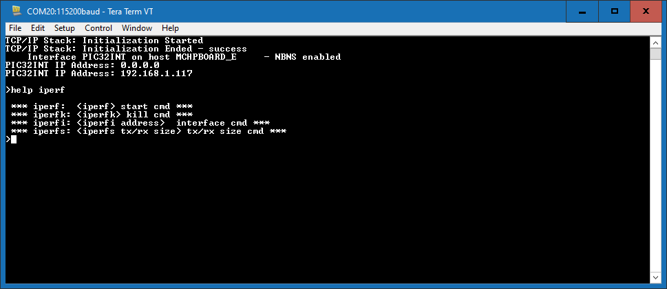

For SAM E70/V71 Xplained Ultra, SAM E54 Xplained Pro Evaluation Kits
Please use the following procedure to run the demonstration:
- Configure the Development Board as given here. For SAM E70 Xplained Ultra make sure jumper J805 has been removed.
- Make the demonstration setup as shown here.
- Build and download the demonstration project on the target board.
- A virtual COM port will be detected on the computer, when the USB cable is connected.
- Open a standard terminal application on the computer (like Hyper-terminal or Tera Term) and configure the virtual COM port.
- Set the serial baud rate to 115200 baud in the terminal application.
- Restart the demonstration by pressing the 'RESET' button on the board.
- See that the initialization prints on the serial port terminal.
- When the DHCP client is enabled in the demonstration, wait for the DHCP server to assign an IP address for the development board. This will be printed on the serial port terminal.
For PIC32MZ Starter Kits
- Configure the Development Board as given here.
- Make the demonstration setup as shown here.
- Build and download the demonstration project on the target board.
- A virtual COM port will be detected on the computer, when the USB cable is connected to USB-UART connector.
- Open a standard terminal application on the computer (like Hyper-terminal or Tera Term) and configure the virtual COM port.
- Set the serial baud rate to 115200 baud in the terminal application.
- See that the initialization prints on the serial port terminal.
- When the DHCP client is enabled in the demonstration, wait for the DHCP server to assign an IP address for the development board. This will be printed on the serial port terminal.
The iperf demo is interactive, using a set of special iperf commands that are supported by the standard set of TCP/IP commands.
Pressing "help iperf" at the command prompt displays the list of the available iperf commands/options:

A brief description of the most important settings/commands follows:
- "iperf": starts the iperf session. Use "iperf -s" for a server connection or "iperf -c address" for a client connection
- Look at the Iperf Module for examples of iperf benchmarks
- "iperfk" kills an ongoing iperf test. This is mainly useful for killing a iperf server waiting for connections. But the command could be also used to abort client test.
- "iperfi -a address" allows to set the interface to use for iperf when the test is run on a multi-interface host. When multiple iperf instabces are used, the extra parameter "-i" could be used to specify the iperf index to which the command refers to.
- "iperfs" command could be used to set the socket TX or RX buffer size dynamically. For example:
- "iperfs -tx 2048"
 Note: Note: |
|
|
MPLAB Harmony TCP/IP Help
|